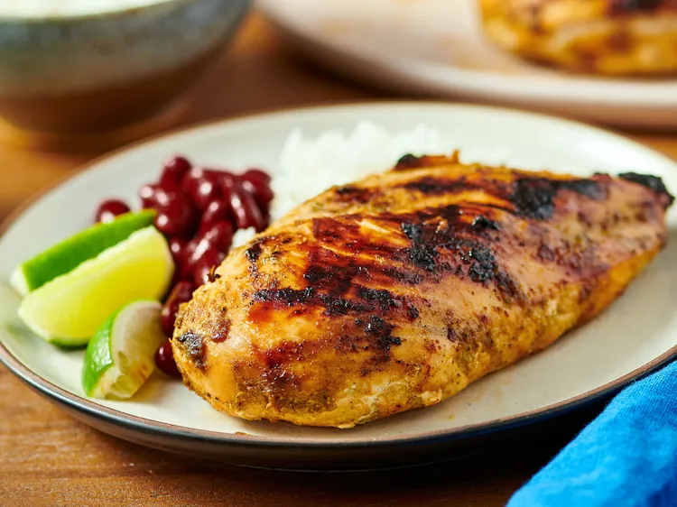

Jay's Jerk Chicken recipe

Jamaican Jerk Chicken
This Jamaican jerk chicken is sweet, spicy, and smoky. Delicious served
with rice and beans.
Ingredients
- 6 green onions, chopped
- 1 onion, chopped
- 1 jalapeño, habanero, or Scotch bonnet chile, minced
- ¾ cup soy sauce or to taste
- ½ cup distilled white vinegar
- ¼ cup vegetable oil
- 2 tablespoons brown sugar
- 1 tablespoon chopped fresh thyme
- ½ teaspoon ground cloves
- ½ teaspoon ground nutmeg
- ½ teaspoon ground allspice
- 1 ½ pounds skinless, boneless chicken breast halves
- lime wedges for garnish
Steps
- Gather all ingredients.
-
Combine green onions, onion, chile pepper, soy sauce, vinegar, vegetable
oil, brown sugar, thyme, cloves, nutmeg, and allspice in a food
processor or blender; process for about 15 seconds.
-
Place the chicken in a medium bowl, and coat with the marinade. Cover
and refrigerate for 4 to 6 hours, or overnight.
-
Preheat grill for high heat. Lightly oil grill grate. Cook chicken
breasts on the prepared grill until no longer pink in the center and the
juices run clear, about 8 to 10 minutes. An instant-read thermometer
inserted into the center should read at least 165 degrees F (74 degrees
C).
- Transfer chicken to a platter and serve with lime wedges.
Home